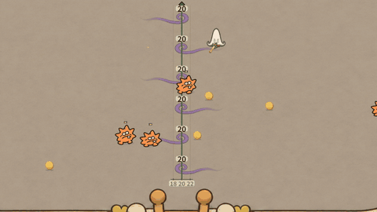
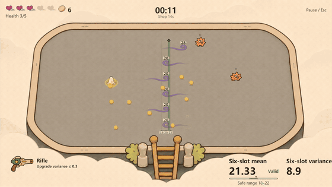
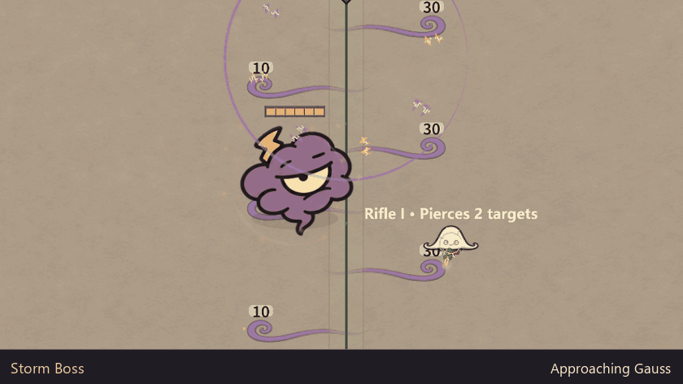
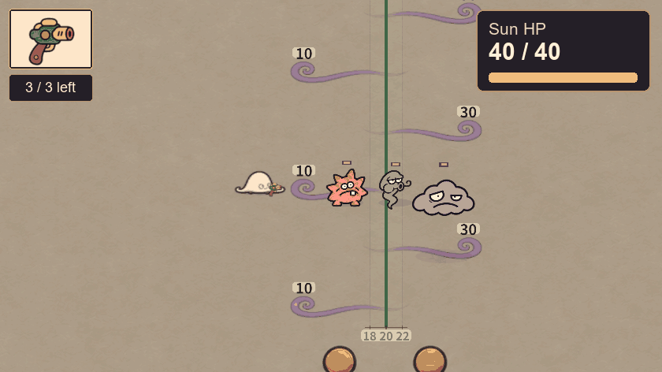
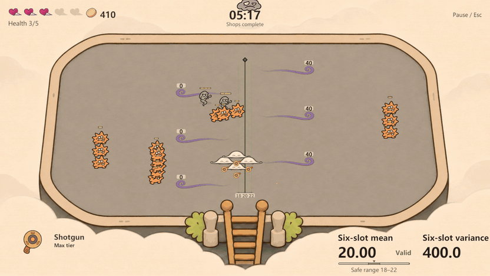
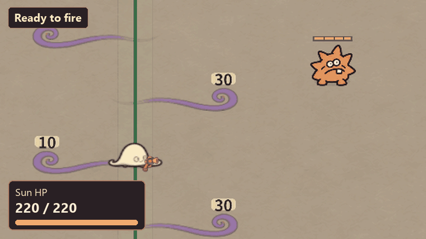
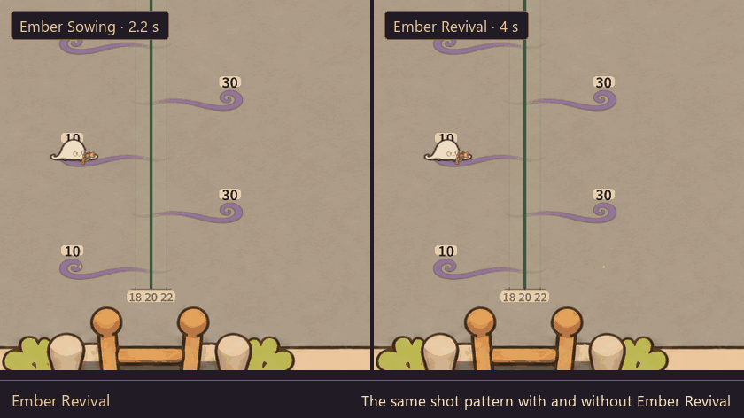
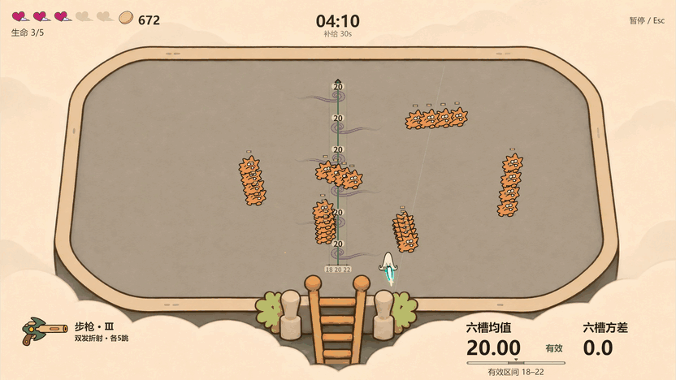
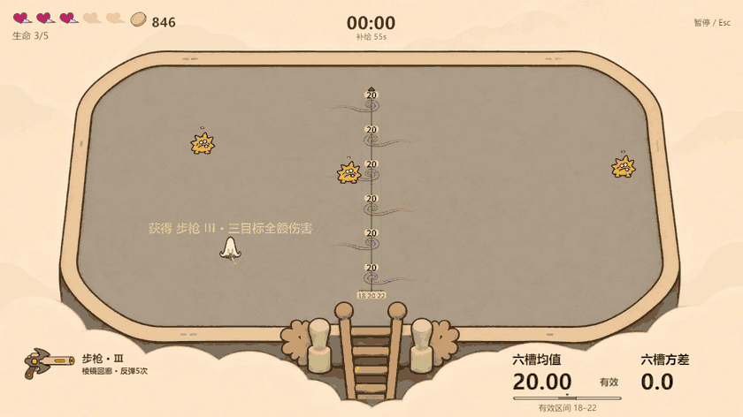
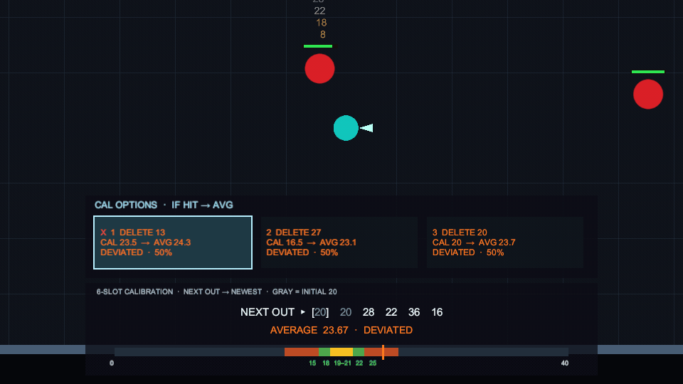

The mean controls damage. Variance shapes your weapon.
In this 2D top-down roguelike shooter, every shot that hits updates one of six data values. Dodge weather enemies, calibrate the mean, and use cards to change how you sample and build your weapon.
Game Overview
Fight waves of weather enemies, spend the coins you earn on rifle or shotgun upgrades, and face the final boss. Closely grouped samples help the rifle pierce enemies. More spread helps the shotgun cover a wider area.
Inspiration
StatsShooter grew out of my background in statistics and my love of trying different builds in roguelites. I wanted players to see how sampling changes a weapon by switching a card and taking a shot.
Combat Rules
Hits update your data, and the mean determines whether shots deal direct damage. Decide when to keep firing and when to calibrate.
Combat and Resupply
Defeat enemies to earn coins. When the countdown ends, spend them on upgrades in the shop.
Combat interface
Six Observations
A shot that hits replaces one value. A miss leaves all six values as they are.
Keep the Mean at 18–22
Average the six values to get the mean. Shots deal direct damage only within this range.
Variance Sets the Weapon Tier
Variance measures how spread out the values are. Low variance adds rifle piercing. High variance widens shotgun coverage.
Move and Shoot
Move with WASD, aim with the mouse, and hold left click to shoot.

Right-click to Calibrate
Right-click to adjust one value and bring the mean as close to 20 as possible.

How Calibration Restores Damage
Shots deal direct damage when the mean of the six observations is between 18 and 22.
Before the shot
20
20
20
20
20
20
Mean 20.0
Direct damage active
After the hit
40
20
20
20
20
20
Mean 23.3
Direct damage paused
The hit that changed the mean still dealt damage.
After right-click calibration
20
20
20
20
20
20
Mean 20.0
Direct damage restored
Upgrade Shop
Defeat enemies to earn coins. When the countdown ends, spend them on cards and supplies or reroll the shop.
The rifle starts at Tier III with all four slots filled. Equipping Piercing Echo means giving up either steadier samples or the coin reward for piercing three enemies.
Gauss takes its shape from the bell curve of a normal distribution. Higher variance makes Gauss shorter and wider, with a fixed collision radius.
Weather Enemies
Sun
Chases you down, making it harder to survive when the mean drifts out of range and your shots lose direct damage.
Wind
Pushes one observation away from the mean. It can knock the mean out of range or raise variance enough to upgrade your shotgun.
Thundercloud
Briefly disables calibration, forcing you to plan when to repair your data.

Storm Boss
Rewrites an observation. Bring the mean back in range while keeping the variance your build needs.
Low- and High-Variance Builds
With the mean at 18–22, the variance of the six live values sets the weapon tier. Closely grouped observations improve rifle piercing. A wider spread extends shotgun coverage.
Base tier

Low-Variance RifleHits one targetExample variance 100
The rifle upgrades as variance falls to 60, 12, and 0.30. Tier I pierces up to two enemies, Tier II up to three, and Tier III deals full damage to all three.
Keep Observations Near 20
Precision Sampling narrows the draw range. Eight-measurement Average turns eight draws into one observation. Center Compression halves its distance from 20. Concentrated Calibration can restore the mean and lower live variance during combat.
Stability, Fire Rate, and Card Slots
With the rest of the loadout fixed, switching to 64-measurement Average reduces the theoretical variance of new observations from 0.188 to 0.023 and slows the fire rate by about 26%. Equipping just 64-measurement Average and Center Compression leaves room for Piercing Bounty and Piercing Echo.
The base shotgun fires a five-pellet spread. At variance 140, 240, and 360, it upgrades to seven, nine, and 25 pellets. At Tier III, it fires in every direction.
Sample Near Both Extremes
Tail Sampling draws values near 0 or 40. Tail Probability makes the endpoints more likely. Variance-preserving Calibration can restore an out-of-range mean or increase variance while the mean is in range.
Coverage and Focused Hits
Centroid Burst requires hitting at least three enemies in one shot. Focus Strike requires landing at least 60% of the pellets on one target. Wide Scatter raises the Tier III pellet count from 25 to 37, so Focus Strike takes 23 hits instead of 15.
With Tail Sampling II and Tail Probability III equipped, swapping Extreme Selection for Wide Scatter reduces the theoretical variance of new observations from 399.2 to 384.7 and adds 12 pellets at Tier III.
Calibration Spawns Clones
Reaching Tier III during a run unlocks Extreme Clone in the shop. When the mean returns to the safe range with variance still at least 350, Gauss and each existing clone spawn one clone, up to the clone limit.
Gauss dodges through waves of weather enemies, builds up the clone army through calibration, and hits the crowd with rings of shotgun fire.

How the Build Plays
Calibrate the mean back into range to spawn more clones. Their volleys spread and stack burns. When Gauss directly hits at least three enemies in one volley, Centroid Burst adds a shockwave.
Four Cards in the Endgame Demo
Sparks, Ember Sowing, Centroid Burst, and Intense Embers fill the four slots. Extreme Clone upgrades separately.
Four Stages of the Ignition Build
Sparks
Shotgun hits ignite enemies. Burns already applied keep dealing damage when the mean goes out of range.

Ember Sowing
Spent pellets and moving enemies on fire leave embers. Other enemies ignite when they cross the embers.

Ember Revival
Each ember patch grows from a radius of 0.8 to 1.2 and lasts 4 seconds, up from 2.2.
Extreme Clone
Three right-click calibrations grow the army from 1 to 3, then 7, then 15 clones. Each can apply its own burn to the same enemy.
The Ricochet Build in the Endgame

How the Build Plays
Keep the six samples close together and the mean in the 18–22 range to sustain Tier III. Lead enemies into the path of reflected shots and keep moving as their dropped coins fly to Gauss.
Four Cards in the Endgame Demo
64-Draw Average, Center Compression, Prism Corridor, and Dual Ricochet fill the four slots. The demo also uses a Coin Magnet maxed out through separate shop upgrades.
Reaching rifle Tier II unlocks this slot-free upgrade. A bolt can bounce once and keep piercing along the reflected path.
Double Wall Circuit
One equipped card raises the limit to two bounces, adding another angle through the crowd.

Prism Corridor
Reach Tier III and own Double Wall Circuit plus Ricochet Mark or Reflection Focus to buy it. It replaces Circuit in the same slot, allowing up to five bounces at Tier III and two at Tier II.
Two Branches
With two data cards and Prism Corridor equipped, the fourth slot can hold Dual Ricochet or Wall Afterglow. Dual adds a half-damage bolt angled 8° clockwise, sharing one sample write. Afterglow leaves spots for 1.2 seconds that slow ordinary enemies inside by 25%.
Design Iteration
Calibration, Card Slots, and Player Choice
Calibration Timing

Early prototype · Manually choose from three slots to calibrateRevised interface · Preview the mean and damage before firing
The Game Picks the Slot. You Pick the Moment.
In the first playtest, players were too busy dodging and firing to compare calibration options under pressure. After I automated slot selection, some players still right-clicked repeatedly. I added a preview of the next shot’s mean and damage. Automated tests confirm that it matches the outcome. A follow-up playtest will check whether it helps players time calibration.
Four Shared Slots
When all four slots are full, choose which card to replace.
Data and Combat Cards Share Four Slots
To equip Piercing Echo, replacing Eight-measurement Average raises the expected variance across six values from 0.156 to 1.25. Replacing Piercing Bounty keeps the variance forecast steady and gives up the coin reward for piercing.
Design Reflection
In the early calibration prototype, players compared slots while dodging. I gave slot selection to the game so players could focus on when to calibrate and when to keep firing.
I wanted sampling cards to turn another calculation into a combat decision. Averaging 64 draws helps the rifle hold its piercing tier and slows fire by about 26% compared with averaging eight. Each shop visit gives the player a chance to weigh steadier piercing against firing more often in the next wave.